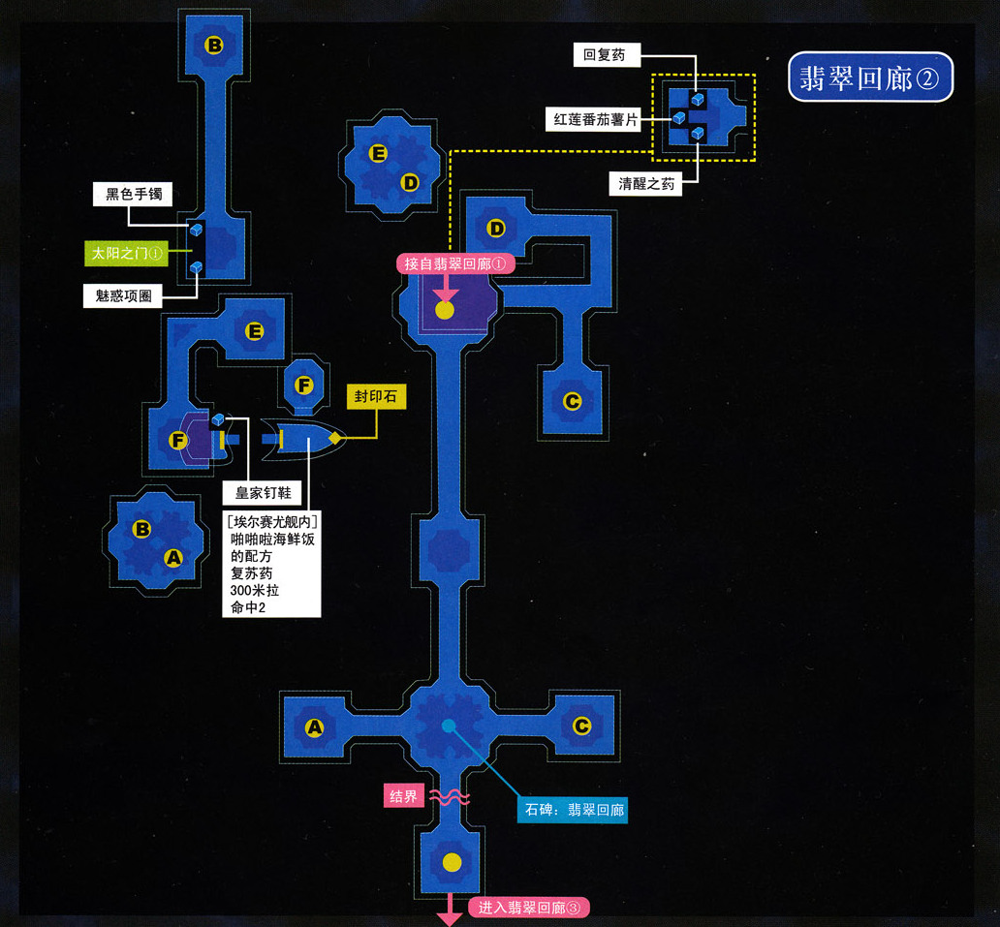
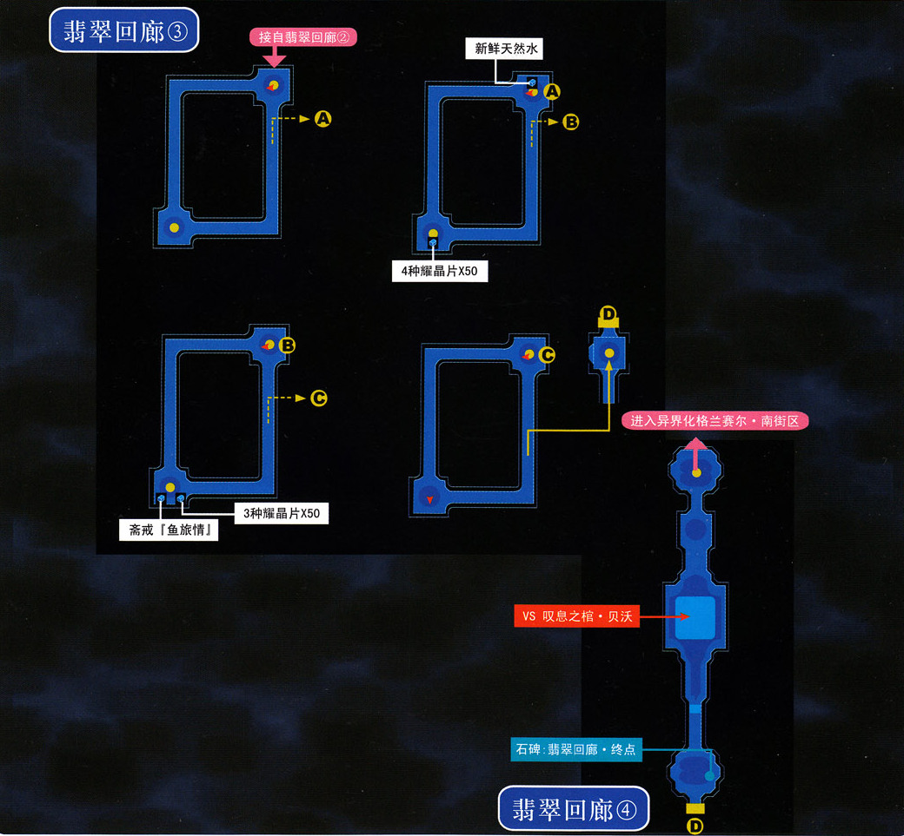

第一话 影之国
隐者之庭院
进入异空间的两个人被迫开始了对周围的探索。目前我们所在的地方是一个被称为"隐者之庭院"的据点，这里将成为今后的基地和补给站，所以要先熟悉一下这里。先走遍整个区域，发生剧情，之后再次调查中部的石碑（发生剧情，我方结晶回路全部破碎，PSP版继承过3rd通关存档的不会破碎），东南角的大树，南部的书库和西南角的泉水，如果有继承SC与3rd的通关存档的话在西南方的岔路还会得到通关奖励。今后，大树将是食材售卖点，石碑将是道具和装备的售卖点、结晶回路合成点、HP/EP回复点，泉水处是CP回复点，每经过五次战斗之后都可以在这里回满CP。调查完毕之后通往北方的结界也就解除了。继续前进之前要做好准备。先在石碑里面合成几个必备回路——回复的HP1必须合成，接下来的战斗敌人弱幻，所以幻属性的EP1也要带上。准备好之后经过北边的传送阵前往第一话的主迷宫——翡翠回廊。
{kind=link}
刚一进入发生剧情战，敌人弱幻，两人在后排魔法攻击即可获胜。获胜后继续探索这个迷宫，注意收集全部宝箱。经过一次传送之后会遇到一个结界，现在这个无法通过，只能走另一条岔路，岔路的尽头会看到一块金黄色石头，调查之后会获得这块封印石，剧情后提妲加入队伍。注意今后的封印石都要由我们自己收集之后带回隐者之庭院的石碑前选择"解放封印石"才能解封，并获得新队员并解除阻碍前进的结界。
提妲加入之后先前的结界解除，为提妲调整装备回路之后就通过结界的位置继续前进吧。提妲的战技都不错，回复弹和烟幕弹在初期很有用，缺点就是HP太少防御力太弱，注意保护这位小Loli。继续前进会看到一个"门"，调查之后提妲会单独进入这个门，门里面有剧情战。
【月之门①（前篇）】进入后发生剧情战，注意敌人的HP少于一半就会使用降低我方MOV的攻击技能"月光疯狂"，多用回复弹和烟幕弹即可。战斗后只需要观看剧情即可，出来之后奖励3000mira和长筒·改。
看完月之门①之后回到主线。注意今后所有这样的机关都叫做"门"，门上面会标有进入门的条件，只有满足条件才能进入，门里面一般是长篇故事（月之门1~5），短篇故事（星之门1~15）和小游戏（太阳之门1~5），完成门的剧情后会获得奖励。今后门也将有传送功能，所以建议玩家见到一个门无论能不能进入都要先调查一下，今后可以直接通过传送来到这里。

继续前进，进入翡翠回廊②。翡翠回廊②比较复杂，传送阵很多，先往南走会看到一个石碑，调查石碑就会激活该石碑，今后可以通过传送直接来到这里。建议先把A-B这个支路走完，拿全宝箱并调查太阳之门①（现在进不去）。回来之后走C-D-E-F这条支线，进入埃尔赛尤号，在埃尔赛尤号底层机关室的卡佩尔上面可以将船内的三处上锁的门全部解锁，现在调查整个船并拿全宝箱，注意甲板上的和作战室内的，很容易漏掉。在驾驶室内发现新的封印石，带着封印石回到据点，在石碑处解封，尤利娅加入。尤利娅初期的战斗力很强，今后也可以作为重要战斗力参战。尤利娅解封之后翡翠回廊②终点的结界消失，直接传送到回廊的石碑处，继续前进，来到翡翠回廊③。

翡翠回廊③就是一个螺旋形下降的直路，一直前进就能到终点。终点有石碑，做好准备之后继续前进吧。前方的BOSS弱空，建议给所有人配出"暗物质"魔法，并补满CP。BOSS战开始阶段，战场四角分别有一个雕像不断使用直线攻击的战技，所以初期要全力攻击这四个雕像，并尽量躲避他们的直线攻击，主BOSS贝沃此时主要用吸血攻击，威胁不大，此时我方缺乏群体恢复魔法，所以站位不要太分散，用提妲的回复弹来进行回复。消灭四个雕像后再来攻击贝沃，贝沃有三个形态，前两个形态战斗力都不强，做好回复即可，如果驱动魔法的话马上打断，第一形态要用暗物质攻击，第二形态尽量用连锁攻击（跟SC一样，尤利娅参加连锁时会对区域内所有敌人攻击两次），第三形态敌人会全体攻击，凯文的星杯领域应该这时候使用了，第三形态也尽量用暗物质攻击，其他攻击方式效率都不太高。
战斗胜利后发生剧情，第一话结束。